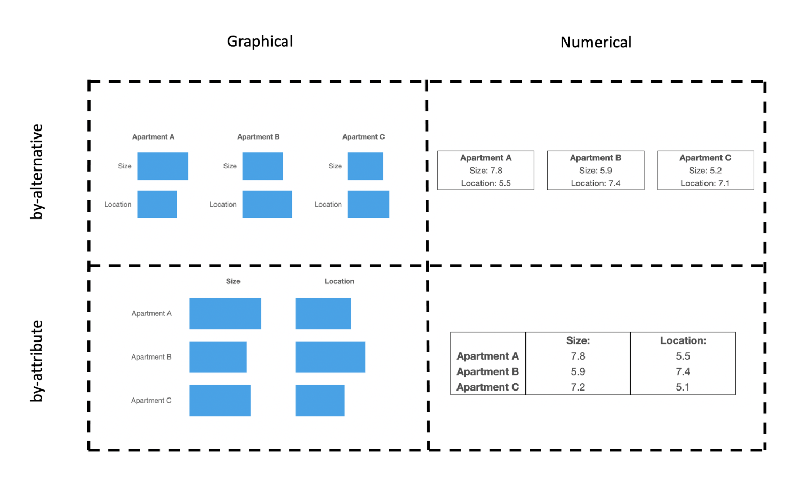
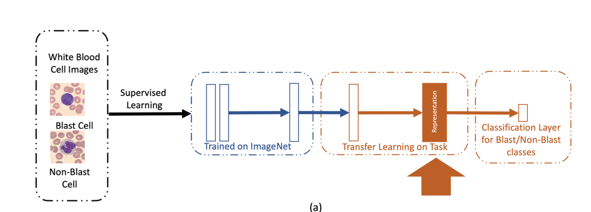
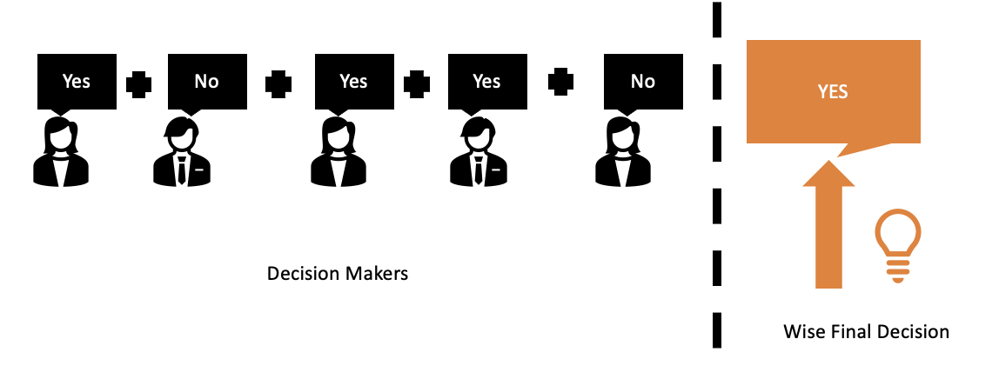
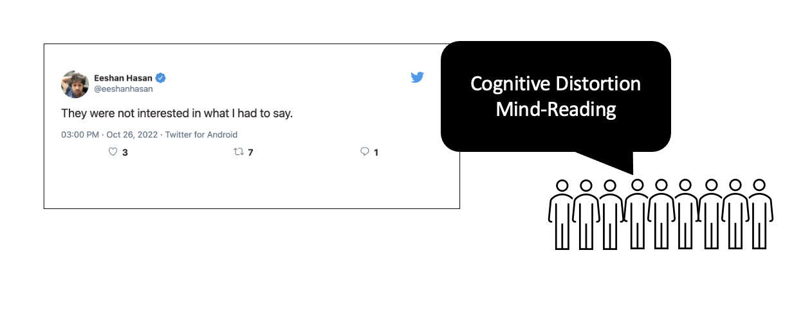

Research Questions
Multi-alternative Multi-attribute Choice
Why do choices depend on 'irrelevant' factors?
When an individual is deciding between alternatives, these alternatives interact with each other. In my research, we show that the format and order in which the information is displayed can impact choice. Using these findings, I am interested in building a mechanistic model that explains how attentional processes of information acquisition can impact the deliberative process during choice.

Modeling with Deep Learning Representations
How do we decide with complex real world alternatives?
Artificial neural networks can give us representations of real complex real-world images, expanding the scope of cognitive computational modeling beyond boring lab stimuli that have simple representations. My research uses these representations to better understand and augment human decision making. I am interested in bridging the correspondence between neural network representations and human mental representations and using them for modeling.

Medical Wisdom of the Crowds
How do we harness collective wisdom for complex (eg. medical) tasks?
According to the wisdom of the crowd phenomenon, the aggregated decision of a group is more accurate than the decision of an average decision-maker. In my research, we train novice and semi-expert populations with low average accuracy on medical tasks to achieve performance that exceeds that of seasoned medical experts. We collaborate with Centaur Labs which recruits individuals with varying expertise to label medical datasets for downstream artificial intelligence applications. We develop and test different intelligent aggregation algorithms, to achieve accurate, reliable labels on medical datasets.

Cognitive Distortions and Social Media Interactions
What is social media doing to us? Can we do better?
Cognitive Distortions or distorted thinking is the use of exaggerated unrealistic ways of thinking and speaking which is associated with mental illnesses such as depression and schizophrenia. Parallely, language on social media has a heightened use of language associated with cognitive distortions. My research examines this association between mental illness and social media use in a controlled experimental environment. We investigated the impact of teaching individuals about cognitive distortions and studied the change in decisions to interact with online social media content.
